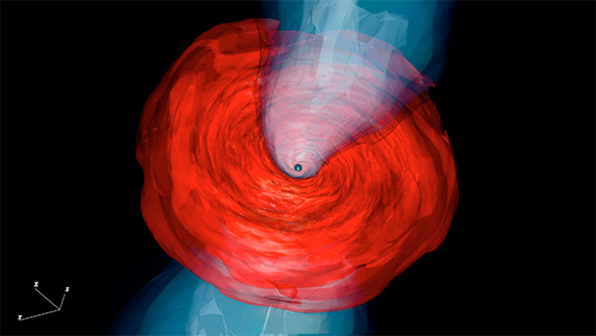

UNAM contributes to unraveling the dynamics of black holes
By reconstructing images from the Event Horizon Telescope, experts from the Institute of Astronomy unite theory and observations

Representation of the black hole M87 prepared at the National University. Image: A. Cruz-Osorio /L. Rozzolla (Goethe University Frankfurt, Germany).
using observations from 2017 and 2018, the collaboration of the Event Horizon Telescope (EHT), a project in which experts from the UNAM Institute of Astronomy (IA) participate, has deepened the understanding of the black hole supermassive at the center of the galaxy Messier 87 (M87). Alejandro Cruz Osorio, researcher at that university entity and collaborator of the EHT, explained that the work team confirmed that its axis of rotation points in the opposite direction to the Earth and demonstrated that turbulence within the accretion disk (gas that rotates around the hole black) plays an important role in explaining the observed change in the ring's peak brightness, compared to what was seen in 2017. The findings, published in Astronomy & Astrophysics, mark a step forward in unraveling the complex dynamics of black hole environments, since until before 2019 these types of phenomena had been theorized, but there was no visual verification of their behavior. The physicist explained that the existence of this shadow of the black hole, as well as that of the photon ring, had already been predicted. For several years, even colleagues around the world had studied these plasma configurations. Cruz Osorio explained: “It was estimated how that image should be seen; For this reason, we say that these observations are a watershed in physics, since it was proven that what we predicted and simulated is observed and exists in nature. Bringing the two ends together –theory and reality– is what emphasizes this result”. This study opens a window into multi-year horizon-scale analysis by leveraging a new library of simulation images with more than an additional 120,000. The university student specified that, as part of the EHT collaboration, UNAM academics have especially contributed to the development of the model for the generation of simulations, in order to produce images that unite telescope observations and reconstructions derived from theoretical models. The image presented in the recent publication is the one that best describes the work. To create it, the university students first generated what they call a synthetic image using Einstein's Theory of General Relativity, and others about the behavior of the black hole and the surrounding plasma. To make them, they tell the computer to put a rotating black hole in the center, a distribution of gas plasma around it. Einstein's and Maxwell's equations are added to calculate how it evolves in this scenario, a process called relativistic magnetohydrodynamics. “What we have learned by comparing observations and simulations is that the gas and magnetic fields that are very strong near M87 naturally generate an emission at the pole of this black hole and the magnetic fields will be breathed; this is called jet, which is where particles are accelerated to speeds close to those of light”, he said. The researcher mentioned that it is now possible to use these images to test more theories of gravity, review different configurations of black holes, magnetic and electric fields, etc., thanks to the simulation system developed at UNAM. In addition, the physics of plasmas can be tested where their properties are studied, those of the gas, the magnetic field and how the particles that live in the accretion disk gain energy and emit it in the form of photons (particle of light). The above also opens the possibility of proposing theoretical solutions to explain the phenomena that occur in black holes and the behavior of plasma.